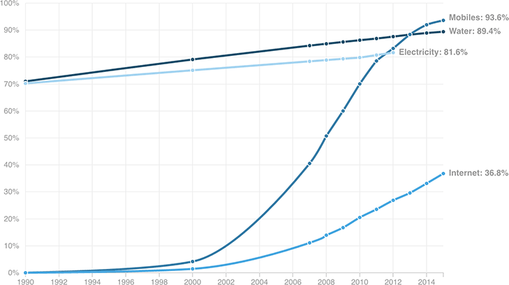

In Low- And Middle-Income Countries, Access To Mobile Devices Is Higher Than Access To Water And Electricity
Share of the population in low- and middle-income countries with access to different services and technologies
